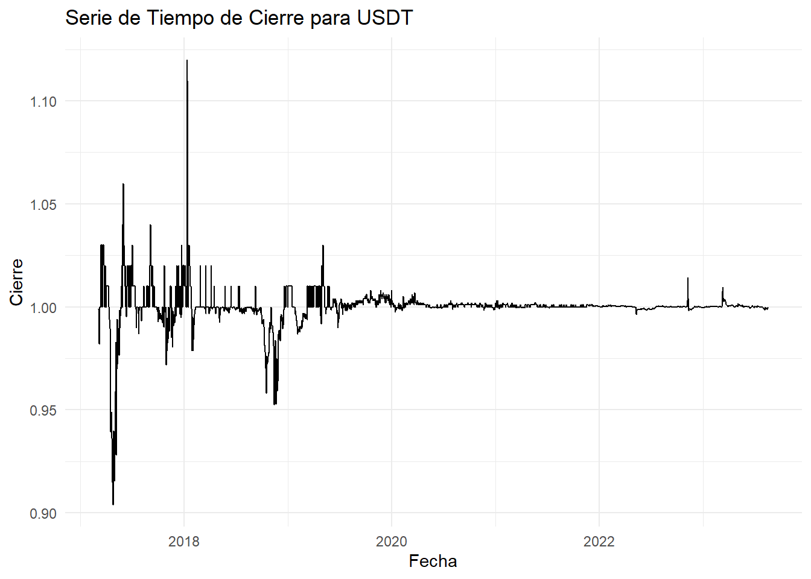

Capítulo 3 Estructura de los datos en series de tiempo
El dataset seleccionado fue el de la stablecoin USDT (Tether) entre las diversas criptomonedas tiene una relevancia significativa en el análisis debido a su naturaleza como stablecoin. A diferencia de las criptomonedas más volátiles, USDT está diseñada para mantener un valor estable vinculado al dólar estadounidense. Esto permite que el análisis de serie de tiempo se enfoque en comportamientos menos volátiles y más predecibles en comparación con otras criptomonedas.
library(readr)
CRYPTO <- read_csv("C:/Users/LUISA MONTOYA/OneDrive - PUJ Cali/ARCHIVOS_LFMS/Escritorio/MAESTRIA-CIENCIA-DATOS/TERCER SEMESTRE/SERIES DE TIEMPO/MOD1-SERIES DE TIEMPO/MI-BOOK-CRYPTO/USDT.csv")## Rows: 2360 Columns: 6
## ── Column specification ────────────────────────────────────────────────────────
## Delimiter: ","
## chr (1): ticker
## dbl (4): open, high, low, close
## date (1): date
##
## ℹ Use `spec()` to retrieve the full column specification for this data.
## ℹ Specify the column types or set `show_col_types = FALSE` to quiet this message.## # A tibble: 6 × 6
## ticker date open high low close
## <chr> <date> <dbl> <dbl> <dbl> <dbl>
## 1 USDT 2023-08-15 0.999 0.999 0.998 0.999
## 2 USDT 2023-08-16 0.999 0.999 0.999 0.999
## 3 USDT 2023-08-17 0.999 1 0.998 0.999
## 4 USDT 2023-08-18 0.999 1.00 0.999 1.00
## 5 USDT 2023-08-19 0.999 1 0.999 1.00
## 6 USDT 2023-08-20 1.00 1 1.00 1.00## # A tibble: 6 × 6
## ticker date open high low close
## <chr> <date> <dbl> <dbl> <dbl> <dbl>
## 1 USDT 2017-03-05 0.9 0.999 0.9 0.999
## 2 USDT 2017-03-06 0.999 1 0.99 0.99
## 3 USDT 2017-03-07 0.99 0.99 0.981 0.982
## 4 USDT 2017-03-08 0.982 0.982 0.982 0.982
## 5 USDT 2017-03-09 0.982 0.982 0.982 0.982
## 6 USDT 2017-03-10 0.982 1 0.982 1##
## Attaching package: 'dplyr'## The following objects are masked from 'package:stats':
##
## filter, lag## The following objects are masked from 'package:base':
##
## intersect, setdiff, setequal, union## Registered S3 method overwritten by 'quantmod':
## method from
## as.zoo.data.frame zoo3.2 Variable de interés
La variable de interés corresponde a “close”. Al enfocarse en el precio de cierre, es posible rastrear tendencias a lo largo del tiempo, detectar patrones técnicos y evaluar el rendimiento general del activo. Además, el precio de cierre es ampliamente reconocido y utilizado en análisis técnicos y fundamentales, lo que lo convierte en una métrica esencial para inversores, traders y analistas que buscan comprender la dinámica del mercado y tomar decisiones informadas.
# Cargar los datos (reemplaza "CRYPTO" con el nombre de tu conjunto de datos)
data <- CRYPTO
# Convertir la columna de fecha a tipo 'Date'
data$date <- as.Date(data$date)
# Filtrar por la variable de interés
variable <- data %>%
filter(ticker == "USDT") %>%
select(date, close)
# Gráfico de la serie de tiempo original
ggplot(variable, aes(x = date, y = close)) +
geom_line() +
labs(title = "Serie de Tiempo de Cierre para USDT",
x = "Fecha",
y = "Cierre") +
theme_minimal()
El análisis se enfoca en la exploración y visualización de la variable “close” de la criptomoneda USDT utilizando R y las librerías ggplot2 y forecast. La elección de la variable “close” fue relevante, ya que este precio de cierre es una métrica fundamental en el análisis financiero y técnico. Representa el valor final de la criptomoneda en un período dado y es ampliamente utilizado por inversores, traders y analistas para rastrear tendencias, patrones y rendimiento.
Inicialmente, se filtran los datos para seleccionar únicamente las observaciones relacionadas con la criptomoneda USDT, lo que permite un análisis más específico y relevante. Se convierte la columna de fecha al formato adecuado y se procede a graficar la serie de tiempo original del precio de cierre. El gráfico destaca la fluctuación del precio a lo largo del tiempo, proporcionando una visión inicial de la dinámica de la criptomoneda.
A continuación, se realiza un análisis de rezagos utilizando diferentes intervalos de tiempo (1 día, 7 días y 30 días). Los gráficos de rezagos comparan el precio original con los valores pasados desplazados en esos intervalos. Estos gráficos permiten identificar relaciones temporales y posibles patrones recurrentes que pueden ser relevantes para comprender la evolución de la criptomoneda.